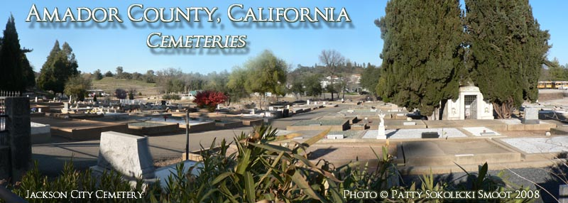

Amador County Cemeteries, Past & Present
Cemetery Locator and Photographs
Please Excuse Our Dust, We are Moving as Fast as we Can...
Amador City Cemetery:
Located behind the Imperial Hotel in Amador City
Amador Memorial Cemetery
25999 State Highway 88, Pioneer
Andrews Family Graveyard
Butte City Cemetery
Aqueduct City Cemetery
Daffodil Hill Cemetery
Drytown:
Drytown Catholic Cemetery (Saint Stevens)
Drytown Protestant Cemetery
Drytown Public Cemetery
Fiddletown:
Fiddletown Community Cemetery
Fiddletown Masonic Cemetery
Fiddletown Oddfellows Cemetery (I.O.O.F.)
Forest Home Cemetery
Hathaway Cemetery
Ione:
Ione Catholic Cemetery (Sacred Heart)
Ione Public Cemetery
Jackson:
Jackson Catholic Cemetery (Saint Patrick’s)
Jackson Chinese Cemetery (site)
Jackson City Cemetery
Givoth Olam Pioneer Jewish Cemetery, aka, Jackson Jewish Cemetery
Saint Sava Serbian Orthodox Church Cemetery
A. Fantozzi Marble and Granite Works
Jackson Cemeteries, a Map
Lockwood Station Cemetery
Lower Rancheria Cemeteries
Oak Knoll Cemetery
Pine Grove Cemetery
Plymouth:
Plymouth Cemetery
Plymouth Oddfellows Cemetery (I.O.O.F.)
Shenandoah Valley Cemetery
Sunset View Cemetery (private)
Sutter Creek:
Sutter Creek Catholic Cemetery
Sutter Creek City Cemetery
Sutter Creek Oddfellows Cemetery (I.O.O.F.)
Immaculate Conception Church Cemetery
Upper Rancheria Cemetery
Volcano Memorial Cemetery
Yeomet Cemetery